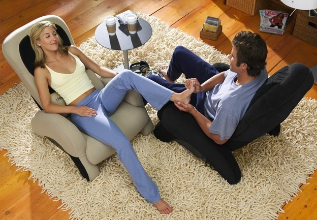

“A life of limitless possibilities is always the only option”
Life Coaching
What is a life coach… and what do they do?
If you are one of the many people wondering what a life coach is... and what a life coach does, you are not alone. Nearly 1,500 people ask Google what the purpose of a life coach is every single month.
Agreed…it is not surprising so many people are asking Google what a life coach is, because it sounds like such a vague term.
Life is a complex thing, consisting of intimate and social relationships, health, fitness, happiness, money problems, career and so many of other aspects.
Each of these things alone can require the help of specialists like relationship councillors, financial planners, personal trainers and even medical professionals.
So can just one person, a life coach, possibly work with you to improve all these different areas of your life?
In short, yes and no.
Think about a football coach. In most cases, they are not superstar football players, but they know how to get the best out of each of the superstar players that they are coaching.
It is the same with a life coach. They might not necessarily be relationship experts, financial planners or medical professionals, but they are experts at establishing what is important in your life, helping you create an action plan to achieve it and giving you all the help, encouragement and motivation to make it all a reality.
So, to answer your question, "What is a life coach?"
A life coach is an experienced professional that enables you to identify, plan for and achieve as many of the things you want out of life as possible.
But what about the details? What does a life coach do specifically? What's the purpose of a life coach? Why do people see one? How much do they cost? What techniques do they use?
I have put together this guide to answer some commonly asked questions that naturally come to mind when asking about a life coach.
Here’s everything you will need to know about what a life coach is and how they work broken down into 5 key questions.
1. Why do people choose to see a life coach?
The best way to start explaining what a life coach is, is to look at why people see a life coach in the first place.
Whilst some professions have a very limited scope, life coaching has the widest scope you can possibly imagine. The whole spectrum of a person’s entire life is about as wide a scope as there is.
With such a wide spectrum of things a person can be experiencing in their own life, you can now imagine that there are a million and one reasons a person may choose to see a life coach.
Quite often a person may seek out a coach for clearly definable things.
Maybe you are lacking self-confidence, unhappy and unfulfilled. Or maybe you just want to achieve more success in life.
Other times it is something less easy to define. Sometimes you just simply do not know what you want but you know you want something more.
A good life coach will help you identify exactly what you want out of life. If you already know what that is, then they will help you go out there and grab it with both hands.
You see, quite often a person knows what they want out of life but they find it extremely difficult to turn it into a reality.
They may procrastinate, lose focus, lack the confidence or even the self-belief that they can do it.
When thinking about all of these different reasons, it actually boils down to one single thing why a person actually sees a life coach; their life is just not yet exactly how or where they want it to be.
This is the purpose of a life coach. People see a coach because they need a powerful mentor who will help them get their life exactly where they want it to be. Or as practically close to that as possible.
With modern technology, people can choose a life coach globally, no matter where they live meaning they can achieve all of the above from the comfort of their own homes.
2. What makes a life coach so effective??
Life coaching is effective for a number of very powerful reasons.
Firstly, and in my opinion most importantly, it combines the power of your mind with that of your coach and focuses that power purely on making your life more meaningful.
Each session you have with your coach is dedicated to you. It is there to uncover your deepest desires, hopes and dreams and do everything possible to make them a reality.
Life coaching contrasts with therapy, because therapy focuses on things that might be wrong in your life. Life coaching focuses on your strengths and qualities internally which you already possess.
Every human being is capable of achieving the same greatness. We all have the same 24 hours in the day. Some use those 24 hours to do nothing, some use them to make millions.
If you really want to know the exact answer to what a life coach is, a life coach is there to help you change your own self-perceptions of what you can achieve and what you are capable of.
My own personal story reflects this. I used to think that spending all my time working to get an amazing career as a head teacher and being a yes man would make me the best leading practitioner in the education sector, but all the whilst I thought and behaved like that, I did nothing but burn myself out and become the victim of controlling behaviour, put in a box and ultimately bullied by jealous individuals.
But I had a burning desire for more and believed deep down that there was more to life. My life. Once I grew to understand that my life was churning up the same issues year upon year, I started to realise that my future had to change.
From being a leader in education, I went on to losing 3 stone in weight, retrained as a personal trainer and fitness coach and worked alongside some of the wealthiest business owners in the UK. I also had the capacity and creativity to design personal gyms for my clients. From there, I went on to train in physiotherapy and provide sports massage therapy. Through a great network of top business clients, I have supported men and women through physical rehab and sports injury too.
In addition to realising that my life was finally getting somewhere without having to try so hard, I undertook a Masters Degree programme in teaching yoga and have since designed personal and life changing yoga programmes for my clients.
You see, my potential was there the whole time - I just could not see it. So, what does a life coach do? They help you uncover your own potential and more importantly, they help you understand how to tap into that potential.
In the same way every single one of us on this planet has that same power to change. You just need more confidence, self-belief or simply a helping hand getting to where you want to go.
This is precisely why life coaching is so effective. We give you all the tools to re-evaluate who you are deep inside and what you are capable of achieving.
We then help you make concrete plans and spur you into action to get the life you not only wish for, but which you are destined for.
3. Will a life coach tell me exactly what I have to do with my life?
Now this is a key point you need to understand right from the beginning. A life coach will never tell you what to do.
When you first ask yourself what a life coach is, you may at first think it is someone who tells people the best way to live their life.
They might share their experiences with you, give insight and mentor you, but they will never tell you what to do.
I would share with you my experiences and tell you how I achieved what I did if you ask, but ultimately, I will encourage you and help you with all my heart to come up with your own steps to take.
Any good coach worth their salt will ask you powerful questions and encourage you to think deeply to come up with your own answers.
They will encourage you to come up with realistic plans of action that come directly from your own mind and to take steps that will work in your own hugely unique circumstances.
Will all the plans we come up with be perfect and work every time? Of course not. The plans in my own life were far from perfect sometimes, but I kept adjusting them continuously until they did work.
A skilful life coach will work alongside you over the long term and help you adjust the parts of your life plans that are not working and build on those parts that are getting you results.
As I like to say, a good coach will never kick the ball for you, they will get you in the best shape possible so you can go out there and score yourself!
4. How does a life coach work and what techniques do they use?
If you are wondering ‘what does a life coach do’, it may be helpful to think of it more in terms of how does a life coach do what they do.
When people start researching life coaches, they sometimes initially see them as similar to a counsellor.
Although life coaching is a very distinct profession from counselling, it does share some things in common as well as using some of the same scientifically developed techniques.
Some of these tools have scary sounding names like Cognitive Behavioural Therapy (CBT), Neuro Linguistic Programming (NLP) and Emotional Feeling Therapy (EFT).
At their core they are all techniques that involve talking deeply with a client about their lives and uncovering things like self-limiting beliefs and both naturally and learnt behaviours.
A life coach may often follow what is known as the “Life Coaching Process”. Think of the life coaching process as planning a journey in your life.
For example, one of the life coaching processes I may use consists of 6 key steps as follows:
• what you want out of life
This could be more happiness, increased self-confidence, more money or simply just a greater understanding of what you actually want out of life and how to achieve it. It is the same as planning a road trip. You first must identify the destination you want to get to.
• Assess your current situation
You and your life coach need to establish exactly where you are in your life right now before you can start planning for your future. Are you already happy but want something more meaningful? Are you already successful but not satisfied? If you are planning your route on a road trip you need to establish your starting point.
• Understand your existing resources
Sometimes the client already has some of the tools and resources that can help them get to their destination such as mentors, specific skills, natural abilities and perhaps money. It is no good teaching you how to get to the petrol station before taking your road trip when you already have enough fuel in the tank.
• Help you create an achievable and highly ambitious plan
This is where I work with you to come up with your own plan for your personal journey in life. I teach you how to use the tools you need such as a map and compass but always encourage you to come up with your own route. There is often more than one route to a destination and I will help you choose your own, based on what makes you feel most comfortable.
• Give you motivation and encouragement to take action
The best planned route in the world is utterly useless if the driver does not take action and set off on their journey. A good life coach will provide you with the long-term motivation and encouragement you need to get past procrastination, self-doubt, lack of focus and confidence. I will never drive your car for you, but I will be travelling alongside you for as long as you need, helping you navigate and clearing the road ahead of anything that may be blocking your path.
• Keep you on track until you have achieved your goals
Sometimes when we are trying to get somewhere, we lose focus and end up going down the wrong track. Sometimes we grow tired and simply want to stop. Other times we forget we are trying to get anywhere at all and get distracted by the millions of less important things that prevent us from getting where we need to go. A good life coach will keep you motivated and keep you on route. I will be constantly improving what is working on your journey and getting rid of things that are stopping you in your tracks.
As you can see, a lot is involved in a life coach’s craft. They have to draw upon the power of tried and tested techniques and processes.
But the most skilled of life coaches will be able to do all of the above without you having to worry about what things like Neuro Linguistic Programming actually means.
They will be able to determine all of the above during your life coaching sessions using the good old art of conversation. Nothing more and nothing less.
5. How much does a life coach cost??
Now for many people who are learning what a life coach is, one of the key things they may be wondering is how much does a life coach cost?
I won’t beat around the bush. A top life coach is what some would term expensive. Top ones will charge anywhere between £100 and £200 an hour.
I have even seen some charge over £500 an hour.
What is more, most coaches (including myself) do not provide single sessions.
I am often asked why lots of reputable life coaches do not provide single sessions and my answer is simple.
Whilst a single session will be enough to start you on the right path, it will not be enough to make a life-long meaningful change.
You would not expect to go to the gym and transform your body in one session. The same applies to your life. It is a process and a journey. It takes time, focus and attention.
This is why many coaches provide packages of at least 6-8 sessions minimum.
I also provide 6-8 session packages but I also offer smaller 4 session packages but whilst I do not recommend smaller programmes, I believe this to be the sufficient minimum to start you off on the right track and may be suitable for you.
From our initial conversation we can tailor a package that suits your needs.
An additional benefit to booking a multi-session package is the overall cost per session can work out cheaper. In general, the more sessions you book as part of a package the cheaper each individual session works out.
You may be asking, why does coaching cost so much?
I personally think the return on the investment you put in will get you the best possible life where you become the best version of you.
Think about it. We have all blown hundreds on nights out, holidays, fancy clothes and who knows what else to make ourselves feel better. These short lived blasts are exciting and great at the time but never provide long lasting contentment.
Life coaching and choosing to make changes that last does.
So why not spend that on something that will help you make a lifelong meaningful change for you and perhaps even those around you who you care about the most?
I have highlighted in this article that a lot goes into the craft of life coaching from psychological techniques, creating action plans and long-term motivation.
Life is hard and coaching someone on how to live a better life is hard too. So, I honestly believe that what might initially sound expensive to some is actually the best thing you will ever do with your money.
If you are unhappy, unfilled or just find it impossible to achieve the things in life you consider important, then you could find life coaching is one of the best value investments you will ever make.
Conclusion
I hope this article has given you a little insight into the question of what a life coach is. I am hoping you will understand more about what a life coach does, why people see them, the purpose of a life coach, how they work and how much they cost.
I have also attempted to show what a life coach does not and should not do. They should never tell you what do with your life. Instead, they will work with you closely and give you all the tools, encouragement and support you need to come up with your own path forward. If you wish, they will share with you their own experiences, but ultimately it is always up to you to decide what to do with your own life.
Having a life coach and creating and sharing your life journey with them can be an incredibly rewarding and fulfilling experience in itself. Knowing you have someone helping you along in life and helping you become a better version of you can give you the confidence you need to push yourself beyond your current limits.
I hope you have found this article interesting. If you want to find out more about life coaching please have a look around my website - I can offer the life coaching alongside one or all of the other therapies listed in the website.
Finally, if you have any questions please get in touch!
I look forward to helping you transform your life and being your life coach.
Michael J
Personal Training & Fitness
Welcome to Michael J Life Purpose Personal Fitness and Exercise!
Whether you want to lose weight, get a better shape, build great muscles, feel more flexible or simply tone up those loose abs and arms, you have found the right place to start!
But it doesn’t just stop there. If getting a firmer bottom, bigger biceps or just start to enjoy a fitness class with friends or meet others for some social interaction, Michael J Life Purpose Fitness offers everything you need to achieve those goals.
What programme suits you?
Stretching and Mobility Workout
If being more supple, flexible and less stiff is what want to achieve, then this programme is ideal for you. Perfect for a complete beginner and those a little more mature in years, this series of sessions will help to gain a greater mobility and help you feel looser and in control with a more able body.
45 minutes in duration and for groups up to 8.
Individual sessions 35. Group classes 9.50
Legs Bums and Tums
An ideal workout 45 minutes for those who are used to exercise but don’t want to take it to the max!. This series of exercises in legs bums and tums does exactly what it says on the tin. It tightens those areas mentioned giving you a tighter and more toned body.
45 minutes in duration and for groups up to 8
Individual sessions 35. Group classes 9.50
HIIT classes – High Intensity Interval Training
A fast paced fun packed exercise programme lasting 60 minutes - for the brave and mighty.
This series of exercises are mean and powerful, incorporating plyometric and isometric exercises. Jumping and pounding will get your heart racing and burn a shed load of calories!
Join this class if you want to sweat and burn. Perfect for conditioning and getting ripped!!! No equipment is needed for this programme but you can use small weights if you already have them at home.
60 minutes class for groups 7 per class -
Individual session 40
Resistance Bands and Cardio Workout
Using rubber bands of differing strengths, this timed workout is perfect for those who want to pull and push a few weights but don’t have the space or the equipment in their homes to achieve a stronger and fitter body.
Fun and dynamic, this workout is designed to tighten muscles you didn’t know you had. You will be surprised to feel new aches in areas which you didn’t think existed. A great class workout with powerful results.
50 minutes class - 7 for class up to 8
35 for individual sessions.
The Perfect Muscle Beach Body – Personal Training
For those who are serious about their training.
Seeing other guys and girls in their summer beach wear with rippling biceps and abs is the envy of most and maybe something you have always wished for. Be honest?
If you fancy the challenge to get the perfect beach body, the perfect muscle beach body programme is right up your street.
All I require is the determination and desire to get there. It’s really tough, but with over 7 years full time career experience of getting both men and women to achieve the body of their dreams, I can create a bespoke and meaningful body programme that will get you rippling like never before. It requires commitment and you need to be keen to get lean!
What does it look like?
A dedicated programme of strength training at the gym combined with a calorie controlled eating plan are essential components to achieve the beach body you deserve. There are also periods when we will be introducing HIIT sessions to create tone and definition. In addition, regular weigh ins and vital supplements are taken to ensure max burn and build are accomplished at every session. Whatever the stage of the programme.
There are several stages to this beach body muscle plan so an in depth study of you – your current behaviours and life schedules are paramount to achieve success. I will also delve into your current training sessions and what you have done already will be taken into account when creating your training programme. Be prepared to make changes….a stubborn attitude and what you already know will be something to consider changing prior to coming onto this programme.
How long does it take?
This depends a lot on how willing you are to achieve the results, but a realistic time frame with staged plans and small step goals will be needed to get to your dream look.
How much will it cost me?
Each session is 35 per session with a minimum booking and commitment to training twice per week with10 sessions in the first instance. Discounted rates will be considered once the initial 10 week programme has been accomplished.
For further information on this body sculpting programme
I am a qualified teacher of Rishiculture Ashtanga Yoga. I offer lessons and sessions in the following areas:
Whatever your age, physical ability, general health and level of interest , you can learn what yoga is all about and why it is for you! There is a strand of yoga that you can discover to enhance your life.
REMEMBER: Yoga is for everyone!
Rishicultire Ashtanga yoga is all about your life. How to be the best version of you! How you live, exercise, eat, feel, behave, relax and sleep. You can start anywhere because we only have the now. Right here where you are!
Choose your yoga from the following programmes.
Beginners Yoga
A step by step programme of basic yoga
This beginners course is designed to introduce you to the fundamentals of yoga practise to enhance your wellbeing, flexibility and mental health.
10 week programme – individual private sessions – 300 class sessions with up to 10 participants – 9.50 per class
Yoga Pranayama
A yoga programme which develops essential breathing methods. It teaches you how and why to breathe correctly. It is proven to help reduce levels of anxiety, stress and combat depression. This programme teaches you practically how to use effective breathing control techniques at any part of your day which can be used anywhere and in any situation.
6 week programme – private sessions 45 per session
Hatha Yoga
A traditional style of yoga to develop posture, balance and flexibility. On this programme, discover yoga routines such as suryra namaskar - a moving flow of both dynamic and slow postures. Suitable for all students who have done some yoga before, this full routine yoga combines a variety of yoga elements including relaxation at the end of the session.
8 week programme – group classes 9.50 per class
Loma Viloma Yoga
A slow moving yoga practise using breathing techniques and postures which balance positive and negative energies within the body. Loma Viloma helps to improve digestion and develop a better emotional and sexual health.
4 week programme – private sessions – 45 per session, once a week
Yoga Mature
A gentle yoga therapy which allows you to be seated if you prefer and is suitable for those with any restricted mobility. Soothing breathing techniques and simple seated, standing and lying down postures are taught which aid smoother mobility and improve the clients range of movement.
8 week programme – private session 45 per session or 9.50 for group up to 10 participants
Yoga Young
A yoga programme developed for primary aged children 5-11. Here you discover the benefits of practising developmental yoga postures and movements when you are young and when the body is still growing and developing. It will give you a head start to cope with early exam pressures and help you cope with peer pressure. It will also enable you to develop good self control, flexibility and mind discipline as you move into the secondary school period.
6 week programme - 45 minute session at 15 pounds per class
Yoga Youth
A specifically tailored yoga programme for individuals. If your child is struggling with identity, fitting in, pressure at school with fears or anxieties which can lead to depression and poor mental health, this is a yoga programme which will enhance self confidence and self belief. Teenagers face so many different pressures in today’s society, so Yoga Youth is designed to help the young individual discover the real self and become more confident in who they are. Becoming an adult can become a more successful transition in their lives through taking on this programme.
Individually tailored programme. 45 minute sessions at 20 pounds per session
Mandala Yoga - visual and hypnotic yoga therapy
Discover the natural power of imagery and colour to release and heal your inner emotions through a basic understanding of the chakras and how to release blocked emotions through this
Private sessions for individuals and Groups up to 4. Half or full day. 150 per participant
Yantra Yoga
Discover and understand why certain events or seasons recur in your life. Learn how to break repetitive negative behavioural cycles that can prevent you from moving forward and developing yourself and a positive way forward.
Discover when and how to make positive changes in your life at the correct and most natural time according to your Yantric birth year.
Individual or small group sessions.
Full day - 195 per day
Yoga Nydra - Develop the art of breathing in meditation
Discover pure relaxation and meditation techniques. This yoga practise adopts specific breathing patterns and guided meditations are given to help you learn how to relax and slow down. A warm blanket is required as this yoga requires you to lie down for the most part of the session.
6 week programme – 45 per private class or 9.50 for class/group sessions up to 10
Yoga Recovery
A simple yoga session developed for those who are recovering . A great yoga programme which boosts mental health and develops life positivity. It is suitable for those recovering post-operation or following a relationship breakup or bereavement. Discover realistic and achievable strategies to help you move forward once again and get your life back on track.
Personal sessions tailored to the individual. 45 per session
Yoga Nutrition
Discover new and healthy ways to eat well and enjoy your meal times through a vegetarian and plant based diet.
Personal programme tailored to the individual. 45 per session
Michael J Massage Therapy will focus on the bodies main structures of bone, muscle, ligaments and tendons along with the connected systems of the heart, circulation and lungs. Treatment is tailored to the individual based on their initial assessment. Exercise plans and advice are routinely given following treatment and the number of treatments will vary depending on the patient's progress in recovery.
When Can Massage Help
Michael J Life Purpose will always try to provide the most important of information to you. This section will provide you with information as to when a message can be beneficial to your health without you even realising.
Listed below are the list of times as to when massage can be beneficial:
Acute Pain
Many people suffer from acute pain for various reasons. Types of acute pain include muscular ache, sharp pains or shooting pains. The most common causes of acute pain include injury, surgery, muscle overuse and muscular tension. Pain is created when receptors in the skin sense something is not right. The receptors then send a signal to the brain so that it can send a message to nerves. Nerves will then create a feeling of pain to stop or reduce the activity. Pain can cause stress levels to increase, relaxation levels to decrease and feelings of frustration or anxiety to arise due to the prevention of sport or exercise. Michael J Life Purpose uses massage for acute pain to help improve relaxation and relieve symptoms of stress and anxiety.
Chronic Pain
Chronic pain can be reduced through massage. For a pain to be termed as "chronic" it will be ongoing pain lasting 12 weeks or more. Chronic pain can arise for a range of reasons. The most common causes of chronic pain are injury or long term illness. Chronic pain can occur in any part of the body and can increase stress, anxiety and sometimes depression. A massage aims to disturb the pain cycle in order to reduce and relieve any pain and prevent it from reoccurring. Michael J Life Purpose uses massage for chronic pain in order to reduce stress and increase relaxation.
Delayed Onset Muscle Soreness (DOMS)
Delayed onset muscle soreness (DOMS) is regularly treated through massage. DOMS is the microscopic tears of muscle fibres and build-up of metabolic wastes within muscles. DOMS can occur at any point between 24 and 72 hours after activity. There are a wide range of causes for DOMS, the most common include muscle overuse, insufficient warm up/cool down and muscle strains and pulls. DOMS can often reduce activity, restrict movement, increase pain and reduce relaxation. Michael J life Purpose uses massage for DOMS to help a person return to sport or exercise, relieve stress and decrease pain.
Part of a training programme
A massage is an effective and beneficial treatment used to help as part of a training programme. A variety of different people can be a part of a training programme for a range of reasons. Some common reasons people use training programmes include to increase fitness, for weight loss and to prepare for an event. A training programme can regularly become intense often increasing the chances of overworking muscles, building muscle tightness and increasing chances of injury. Michael J Life Purpose uses massage as part of a training programme to help reduce muscle tension, improve muscle condition and prevent injury.
Post Event
A post massage is performed from 30 minutes up to 72 hours after competition or activity. Many massage techniques are utilised to increase blood circulation, remove metabolic waste and calm muscles down after activity. Post event massage uses light pressured techniques alongside passive stretching to help regain normal muscle resting lengths after strenuous exercise. A post event massage helps treat and prevent delayed onset muscles, fatigue and tightness. Michael J Life Purpose provides post event massages for a range of circumstances.
High muscle tone
High muscle tone is often treated through massage. High muscle tone involves the low level contraction of muscles that occurs unconsciously. High muscle tone can be visually defined and have a firm appearance as well as touch during rest. High muscle tone can decrease movement, increase muscle tightness, tension and increase the chances of injury. Michael J Life Purpose uses massage for high muscle tone to help improve movement, reduce tension and prevent injury.
Post injury
Massage can play an important role in the process of injury rehabilitation. Massage encourages blood circulatory movement and relaxes muscles. Massage helps to deliver more oxygen and nutrients to soft tissues and organs. An increase of vital nutrients into the tissues accelerates the healing rate of injured areas. Massage can help a range of injuries including sprains, strains, broken bones and muscles tears. Using a variety of massage techniques, massage can stretch out tightness and loosen scar tissue. Using massage as part of injury rehabilitation can increase healing rate and shorten recovery time.
Many types of massage are used post injury to help relieve acute pain. Acute pain can be left in the muscles and soft tissues after injury. Pain can be caused due to muscle tightness and fascia restrictions after injury. When injury occurs, muscles act as a protective mechanism and tighten around an area of injury. Fascia is connective tissue located under the skin. Restrictions in the fascia tissue can become tight due to scar tissue and lack of range of movement. Massage helps to manage tightness and helps to restore blood circulation in the tissues.
Massage is used to treat tight muscles post injury. Muscles commonly tighten after injury which leads to restrictive movements. Injury can affect a muscle's optimum length which results in an increase of tightness. Muscles are made up of overlapping fibres. If a muscle is tight, fibres overlap too much causing lack of flexibility. Massage can help increase the temperature of tissues to loosen and stretch them. Stretched fibres allow muscles to function better and injury recovery to be improved.
Massage is an effective treatment to reduce scarring after injury. Scarring is the natural healing process of damaged tissues. The body produces collagen fibres and sends them to repair around an injury site. Collagen fibres differ in texture to normal tissue fibres. Collagen is tough in texture and lays across the direction of muscle fibres. Scarring can be restrictive and aggravate to cause pain. Massage uses specialised techniques to loosen, break down and realign collagen fibres. Reduced scar tissue increases normal function of soft tissues, decreasing pain and tightness.
Sports Massage Service
Sports massages are not limited to athletes. Sports massage is an appropriate massage treatment for anyone who is in need of a remedial or soft tissue mobilisation. The remedial effects of sports massage are beneficial post-surgery, alongside physiotherapy, osteopathy or chiropractic, or as a health benefit within an office environment.
Pain Management
Pain management is a way to help people deal with their pain and its impact on their daily life. The aim of pain management is to alleviate pain where possible. If this is not possible, pain management will help to reduce pain and teach people ways to manage their pain on a daily basis. This will allow people to take control of their pain and learn strategies to try and improve their independence and quality of life.
Relaxation Exercises
Relaxation techniques involve activities and body positions to reduce pain and anxiety and promote mental and physical well-being. Such techniques may involve:
• Refocusing attention – such as areas of attention in the body
• Increasing body awareness
• Exercises (such as meditation) to connect the body and mind together
• Reducing the perception of pain
Emotional stress and pain can increase muscle tension and interfere with movement and function. Michael J Life Purpose massage therapy uses relaxation technique to relieve musculoskeletal tension and improve your quality of life. Relaxation techniques will be focused on:
• Reducing anxiety and tension
• Reducing pain and stiffness
• Improving quality of sleep
• Improving comfort
• Improving posture
Michael J Life Purpose offers professional massage and holistic therapy in the following areas
• Upper body - back and neck sport massage
• Full Body MOT – complete body check
• Kinesiology Taping and support for rehabilitation and injury
• General sports massage
• Head massage – holistic and relaxing
• Foot massage – using reflexology techniques for a relaxing and meaningful experience
All massage therapy sessions are priced at £45 per hour and £30 per half hour
Packages are available for clients needing regular therapy sessions.
Please contact me to discuss your individual programme of therapy.
Michael J Life purpose Holistic therapies focuses on using relaxation techniques as an integral part of the holistic therapy process.
Learning how to be relaxed when we are busy, working, running a home or looking after loved ones is not easy. It is something we all need to learn in order to find a balance for our lives. When we learn how to bring relaxation into our every day lives on a regular basis, our bodies heal and recover far more efficiently. Our mental health improves and we become a better version of ourselves.
Michael J Life Purpose provides holistic therapy relaxation and massage which will leave you feeling refreshed and rejuvenated.
Facial Massage
Facial massage helps promote healthy skin while relaxing your facial muscles. It has a relaxing and rejuvenating effect, helping you look and feel better.
Amazing benefits:
• Reduces Anti-aging and wrinkles
• Relieves Sinus pressure
• Decreases Acne
• Increases Glowing skin
• Improves Skin blood flow
• Increases rejuvenation
• Heals and Manages scar tissue
Facial Massages are 45 minutes in duration and cost £50.
You can choose from a range of essential oils which enhance the wellbeing experience.
Indian Head massage
Using a range of pure essential oils, Indian head massage is a stimulation head massage using a variety of hand movements which have amazing effects on wellbeing and mental health.
Benefits of Indian Head Massage:
• Aids in the relief of migraines. Often tension in the mid back, neck and head can lead to headaches and migraines
• Promotes Hair Growth
• Stimulates Lymphatic Drainage
• Relieves insomnia and fatigue
• Relieves symptoms of anxiety and depression
• Renews energy levels
• Boost memory capabilities
Should this be a therapy you would love to try, please note that the essential oils are left on the head and scalp after the massage to prolong health benefits. Once the therapy is concluded it is suggested that a suitable head scarf or hat is worn, especially if you are driving. This prevents any staining onto the fabric or leather headrests in your car.
Foot Massage
Using reflexology techniques, there are huge benefits to your health, as well as relaxation.
We all know that a short foot massage every now and then can really help us relax, particularly after a long day of standing up and walking around, when our feet tend to swell up. Sure, everyone enjoys it, but does it really have any benefits other than making us feel a bit more relaxed and relieving some of the pain?
There are a several different massage techniques that all promise certain health benefits. Traditional therapeutic techniques focus on relaxing the muscles and joints; acupressure seeks to improve general health and energy flow by acting upon specific pressure points; aromatherapy uses scented oils and relaxing music to add an additional element of relaxation by acting upon multiple senses; and reflexology seeks to improve internal organ function by massaging specific areas of the foot.
There are many claims, some fairly outrageous, about what a simple massage can do for you, but there is very little evidence to support them. We will take a look at some of the benefits of foot massage that are supported by actual scientific research – benefits that are either immediate or can be seen and felt after a couple of weeks, even with as little as two to three sessions per week.
1. It’s good for your sex life
All it takes is some massage oil, a few scented candles and light music to set the perfect mood for a night of passionate lovemaking. A foot massage is a selfless gift to your significant other, it helps them forget about minor annoyances they’ve had to deal with throughout the day and it is a great form of foreplay. The feet are a great starting point since they can cause mild arousal and offer easy transition to more powerful erogenous zones like the back of the knees and inner thighs.
2. Improves circulation
Due to a mostly sedentary lifestyle we have become unaccustomed to using our muscles on a regular basis. The muscles in the feet get hardly any exercise and circulation is often impaired by tight and uncomfortable shoes. A 10–20 minute massage session before going to bed can greatly improve circulation in the lower extremities, which is particularly important for people suffering from diabetes.
3. Helps prevent foot and ankle injuries
Massaging the feet can help with joint pain and aid recovery after an injury, as well as reduce muscle soreness. However, when massage is combined with foot and ankle strengthening exercises and stretching it can prevent future injuries, as well as speed up recovery of existing injuries. A short session three to five times a week will ensure that you minimize the risk of injury. We all have our moments of clumsiness, but a strengthened and flexible ankle and foot ensures that we can avoid unpleasant injuries.
4. Reduces the effects of depression and anxiety
Looking at some of the studies that have been done on the effects of reflexology, it seems that this type of foot massage goes beyond simply putting people in a relaxed state for the duration of the massage. Frequent sessions have been shown to significantly reduce anxiety in cancer patients. The techniques can be learned fairly quickly and can serve as an effective way of dealing with depression and anxiety.
5. Helps with headaches and migraines
A study conducted in Denmark showed that people suffering from headaches and migraines showed great improvement after receiving reflexology treatments. The test subjects stopped taking their medication, and three months after completing their treatments, 65% had reduced symptoms while a small number had been cured. It is believed that those who had reflexology foot massages managed to make additional positive lifestyle changes that may have contributed to their impressive results.
6. Lowers blood pressure
High blood pressure has become fairly common in modern men and women. It can be caused by a number of things such as stress and an unhealthy diet, but in most cases it has no particular cause and is believed to be a result of environmental factors and genetics. A study conducted on healthcare staff working with elderly people suffering from dementia – a job that is highly stressful and both physically and mentally taxing – showed that a 10-minute foot massage session up to three times a week resulted in improved mood, less anxiety and lower blood pressure.
7. Helps with flat feet and plantar fasciitis
People with flat feet do not have a normal foot arch due to ligament laxity, which causes the arch to collapse. It can have no major effect on a person, but some people experience foot pain after even mild physical activity due to flat feet. Chronic heel pain can be caused by inflammation or deterioration of the plantar fascia (the connective tissue that supports the arch of the foot). Regular foot exercise coupled with deep massage, where you apply strong pressure on the arch, can help significantly lessen the pain and even cure these conditions.
8. Helps alleviate symptoms of PMS and menopause
The most common symptoms suffered during PMS include feelings of sadness and unhappiness, irritability, anxiety, tension, insomnia, fatigue, headaches and mood swings. Most of these symptoms can be alleviated with daily foot massages during this period.

In the same vein, symptoms of menopause, which are similar to those suffered during PMS with the addition of hot flashes and depression, can be effectively minimized with regular massages.
9. Reduces effects of edema in pregnant women
Edema, that is, swelling due to fluid retention in the feet and ankles, is very common in pregnant women, mostly in the last trimester. This condition can be combated by massaging the feet on a daily basis, coupled with plenty of rest and the right diet.
As you can see, foot massage is a lot more beneficial to both physical and mental health than most people realise.
Michael J Foot massage therapy treatment prices are £45 per 45 minutes and £60 per hour.
The finest quality pure essential oils are used to enhance a truly rejuvenating and holistic experience.